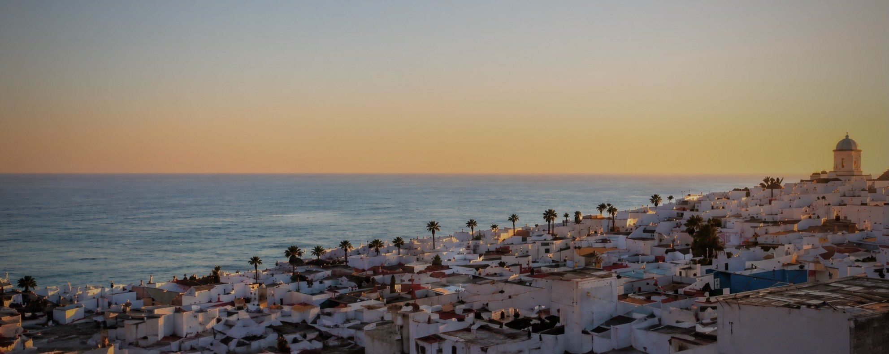
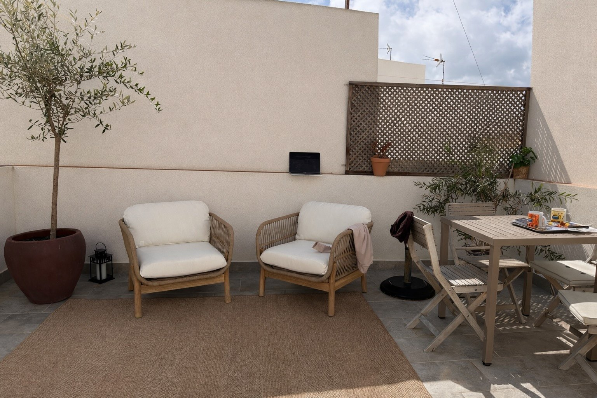
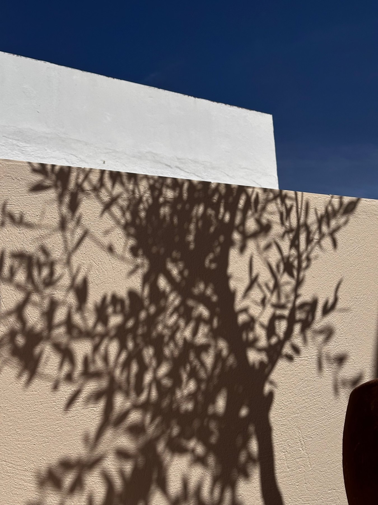
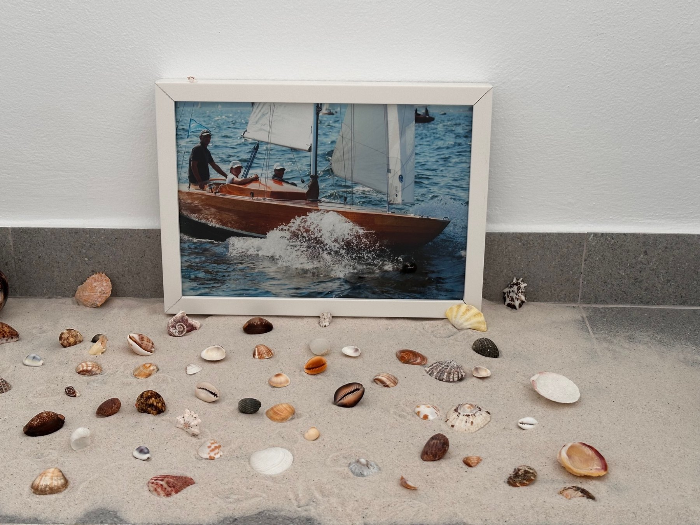
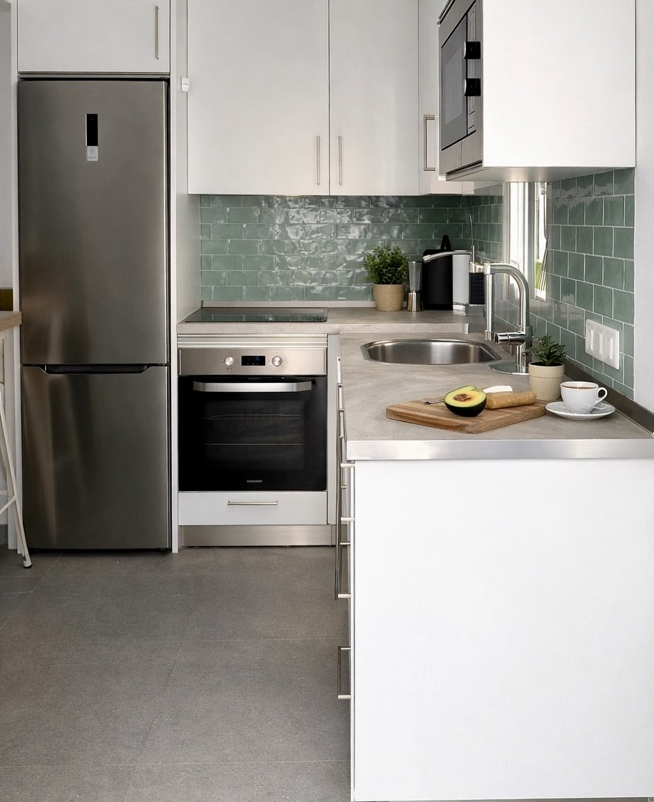
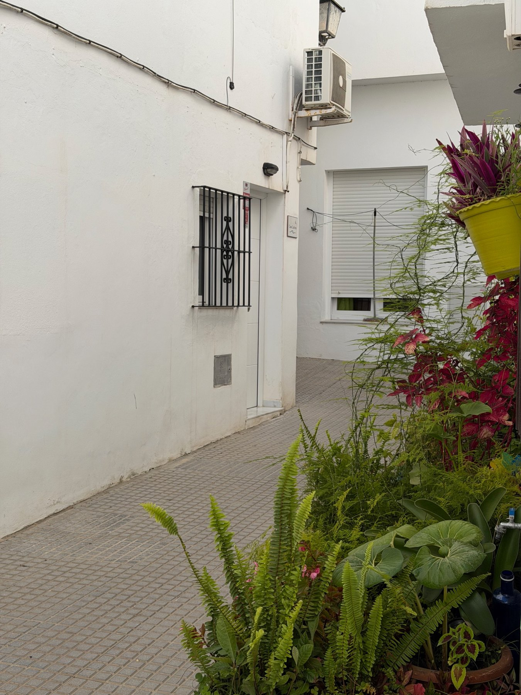
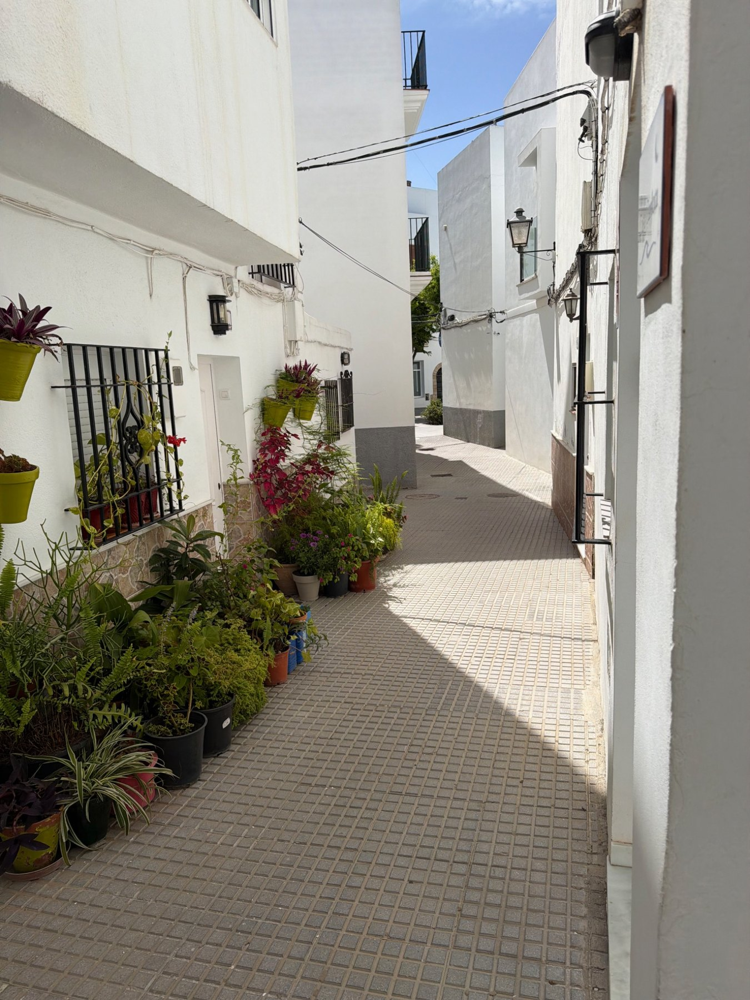
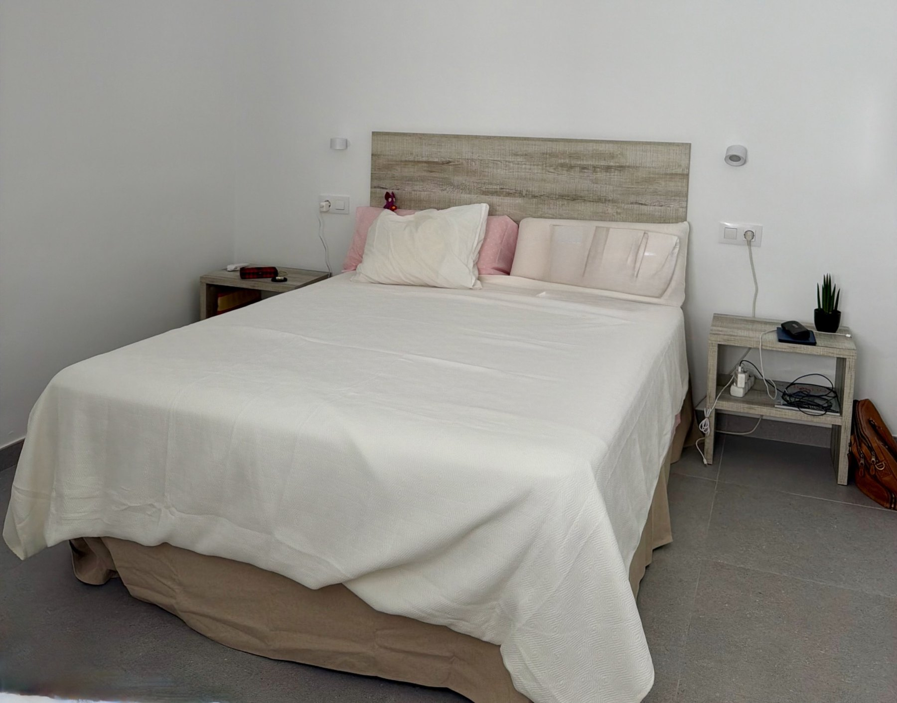

Una casa andaluza con alma en Conil

La Casa
Una casa andaluza restaurada para vivir Conil despacio
En un patio tranquilo del casco histórico, Casa Carlota combina la sencillez de una casa antigua con una renovación cuidada y actual. Un lugar pensado para parejas o pequeñas familias, a pocos pasos del mar.
Luz · Materia · Calma
Detalles que hacen casa
Muros blancos, cerámica, sombra de olivo y pequeños gestos junto al mar. Una forma sencilla de estar en Conil.

Sombras de mediodía.

Pequeños recuerdos del mar.

Cocina renovada, clara y práctica.
La Azotea
Un pequeño refugio bajo el cielo de Conil
La terraza privada es un lugar para desayunos lentos, tardes de sombra y noches largas de verano. No busca vistas espectaculares: ofrece algo más íntimo, una calma propia dentro del patio.
Conil de la Frontera
Vivir dentro de Conil
Calles blancas, vecinos tranquilos, pequeñas tiendas y restaurantes a unos pasos. Casa Carlota es una casa vacacional en Conil de la Frontera para quienes quieren estar cerca de la playa sin renunciar al ritmo del casco histórico.



Dormir
Espacios sencillos, pensados para descansar
En la planta superior, dos dormitorios: uno con cama doble y otro con litera. La casa funciona especialmente bien para una pareja, o para una pareja con un niño, que buscan un alojamiento tranquilo cerca de la playa en Conil.
Reservas
Consultar disponibilidad
Para estancias de verano, escríbenos con las fechas deseadas y el número de personas. Te responderemos de forma directa y personal.